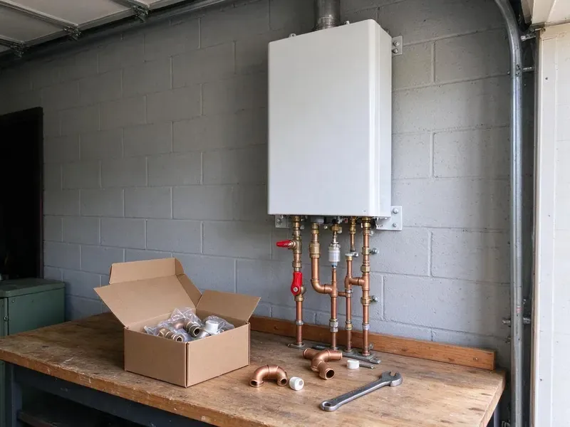

Water Softener Installation in South Burlington, VT
CKV Plumbing installs water softeners that stop scale buildup, spotty dishes and dry skin caused by hard water in South Burlington, VT.
- Fast Softener Installation
- Fast, Dependable Service
- Licensed and Insured Plumbers
- Loop Installs Available

Need a Water Softener Installed in South Burlington, VT?
Contact CKV Plumbing today for a free consultation and discover the benefits of a whole-home water softener system.
Your Go-To for Water Softener Installation in South Burlington, VT
CKV Plumbing tests your water, recommends the right system and installs it on your existing softener loop or a new one. We program the control valve, set the salt level and walk you through maintenance.
Our expertise includes:
- Expert sizing and selection of water softener systems
- Salt-based softeners with Fleck and Clack control valves
- Installation of all major water softener brands

Additional Plumbing Installation Services in South Burlington, VT
We install water heaters, pumps, lines, and fixtures across South Burlington, VT with precision workmanship that meets every local code.


Customers
Why Choose CKV Plumbing for Water Softener Installation in South Burlington, VT?
Choosing the right water softener and having it installed correctly is crucial for its performance and longevity. Our experienced plumbers deliver a professional installation every time.
- Healthier Skin & Hair, Eliminate the harsh effects of minerals, leading to softer skin and shinier hair.
- Clean Installation, We use quality fittings and include a bypass valve for simple service.
- Proper Sizing, We size by grain capacity, household size and daily water use.
Citywide Coverage
CKV Plumbing works in every neighborhood of South Burlington and surrounding communities for water softener installation. Whether you're in an older district or a new development, our team is ready to provide prompt and reliable service.
Experienced Team
Our team of plumbers has extensive experience with many water softener models and installation scenarios common in Vermont homes. They are adept at handling everything from basic residential setups to more complex whole-house systems.
Safety-First Approach
We follow local code when adding loops or making plumbing changes. Electrical connections for control valves are made safely to proper outlets.
Trusted Certified South Burlington Plumbing Services Professionals
At CKV Plumbing, we take pride in providing licensed, certified plumbing services throughout South Burlington, VT. Backed by recognized industry credentials, our experienced plumbers combine technical skill with genuine customer care. Whether it is repair, installation, or maintenance, we follow strict safety and quality standards to deliver lasting results you can trust.
Call Us Now PHCC Plumbing Contractor Recognition
PHCC Plumbing Contractor Recognition Better Business Bureau (BBB) Accreditation
Better Business Bureau (BBB) Accreditation Angi Certified Pro
Angi Certified Pro ISO 9001 Quality Management Certification
ISO 9001 Quality Management CertificationReliable Water Softener Installation Services in South Burlington, VT
Combination Softener and Carbon Filter Systems in South Burlington, VT
Municipal water often contains chlorine or chloramine that affects taste and smell. A carbon filter paired with a softener removes those chemicals and protects resin. We install combination systems with filter and softener tanks or dual-stage units. This setup improves both water quality and feel. Many homeowners notice a real difference in taste.

Salt-Free Water Conditioner Installation in South Burlington
For homeowners looking for an alternative to traditional softeners, we also offer salt-free water conditioner installation. These systems condition the water to prevent scale buildup without removing healthy minerals or adding salt. While not true softeners, they are an effective option for scale prevention and are popular in many South Burlington households.
Salt-Based Water Softener Systems in South Burlington, VT
Salt-based water softeners are the most common and effective type, using ion exchange to remove hard minerals like calcium and magnesium. CKV Plumbing has years of experience with the installation of these traditional systems, ensuring proper brine tank setup and regeneration cycles. We can recommend efficient models that minimize salt and water consumption for your South Burlington, VT home.
Pelican Water Softener Installation in South Burlington, VT
Pelican Water Systems offer a variety of water treatment solutions, including both salt-based softeners and salt-free conditioners. If you've chosen a Pelican system for your South Burlington, VT home, CKV Plumbing can provide expert installation. Our plumbers ensure proper sizing, secure connections and correct startup procedures to maximize the effectiveness and lifespan of your Pelican water softener or conditioner.
Water Softener Installation Cost in South Burlington, VT
Softener installation costs depend on system type, capacity and whether you need a loop. Installing on an existing loop is faster and costs less than adding a new loop. Salt-free systems and combination filters vary in price. We give you a written quote that includes equipment, labor and setup. We also explain long-term salt and maintenance costs.
Water Softener Replacement & Upgrades in South Burlington, VT
If your old water softener is failing, inefficient or no longer meets your needs, CKV Plumbing offers professional water softener replacement and upgrade services in South Burlington, VT. We can remove your outdated unit and install a newer, more efficient model, often with modern features like smart controls or higher capacity. Upgrading can save you money on salt and water usage in the long run.
Whole-House Water Softener Systems in South Burlington
A whole-house water softener system is installed directly on your main water line, treating all the water entering your South Burlington home. This means every faucet, shower and appliance receives soft water. Our installation process involves carefully integrating the system into your existing plumbing, including necessary bypass valves and pressure regulators, to provide complete protection against hard water throughout your property.

Ecodyne Water Softener Installation in South Burlington
We also install Ecodyne water softeners, which are designed for solid performance and ease of use. These systems often come with user-friendly features and provide consistent soft water results. Our plumbers are familiar with Ecodyne specifications, guaranteeing a correct and efficient installation for your South Burlington home.
Water Softener Installation Near Me in South Burlington, VT
Looking for 'water softener installation near me' in South Burlington, VT? CKV Plumbing is your local expert. We are deeply familiar with water quality issues in Vermont and provide timely, reliable service to homeowners throughout the area. Our team is always ready to respond quickly to your water treatment needs.
When you need professional water softener installation, you want a trusted local company. CKV Plumbing offers convenient, high-quality service, ensuring that residents in South Burlington and surrounding towns have access to the best hard water solutions. Call us for service that's truly 'near me' and focused on your community.
CKV Plumbing at a Glance
- Fully licensed plumbing team covering South Burlington, VT
- 24/7 emergency service with same-day scheduling
- Clear written estimates, no hidden fees
- 4.8-star rated by 553+ Vermont customers
South Burlington Map
South Burlington Information
- Population
- 21,043
- Area codes
- Local
- Service area
- South Burlington and communities within 40 miles
- Nearby
- Shelburne, Winooski, Burlington, Essex Junction
Water softener installation matters for homes in South Burlington, VT because hard water can damage plumbing and appliances over time, leading to reduced efficiency and expensive repairs.
Expert Services
Trust our professionals for reliable CKV Plumbing solutions in South Burlington, VT.
Our Specialized Plumbing Services in South Burlington, VT
At CKV Plumbing, we provide a complete range of plumbing services across South Burlington, VT. From leak detection to full system installations, our team ensures fast, precise, and affordable service for both residential and commercial properties. Explore our core services below:


How Our Water Softener Installation Process Works in South Burlington, VT
Our water softener installation process is designed for efficiency and customer satisfaction. We make sure every step is clear and tailored to your South Burlington home's needs.
Request a Quote
Contact us at (802) 209-5139 to schedule a consultation. We'll discuss your needs, test your water and provide a written, no-obligation quote.
System Selection
Our plumbers will help you choose the best water softener system for your home, considering water hardness, usage and budget.
Professional Installation
Our certified plumbers will install your new water softener, ensuring all plumbing and connections are done to code and function perfectly.
Frequently Asked Questions About Water Softener Installation in South Burlington
Most water softener installations cost $1,500 to $4,000 including equipment. Adding a new softener loop usually adds $500 to $1,500 depending on access.
While some homeowners attempt DIY water softener installation, it's strongly recommended to hire a professional plumber. Proper installation involves complex plumbing connections, understanding water pressure and meeting code compliance. Professional installation prevents leaks, supports reliable performance and protects your warranty.
Homeowners with a loop can sometimes install a softener, but proper drain air gaps, bypass valves and programming matter. Professional installation helps avoid leaks and poor performance.
Installing on an existing loop usually takes two to three hours. Adding a new loop can take half a day or more.
In many areas, a plumbing permit is required for significant plumbing alterations like water softener installation to ensure compliance with local codes. CKV Plumbing will advise you on any necessary permits for your South Burlington installation and can assist with the application process.
Installing a water softener offers many benefits, including preventing scale buildup in pipes and appliances, extending appliance lifespan, reducing soap and detergent usage and improving the feel of your skin and hair. It also makes cleaning easier and keeps clothes looking brighter.
A properly sized and installed water softener should not significantly affect your water pressure. If you experience a noticeable drop in pressure after installation, it could indicate an issue with the system or installation, which our plumbers can diagnose and resolve.
While some homeowners attempt DIY installation, it's generally recommended to hire a professional. Incorrect installation can lead to leaks, inefficient operation or even damage to your plumbing system. Professional installation provides proper sizing, correct connections and adherence to local plumbing codes.
What People Are Saying About Our Plumbing Experts?

Laura S.
I scheduled a water heater replacement, and the team made the process smooth and affordable. The new unit works perfectly, and they cleaned up after completing the job.
Water Heater Replacement · Winooski, VT
Robert G.
The trenchless sewer replacement saved our front yard. They walked us through the camera inspection footage first so we knew exactly what we were paying for.
Sewer Line Replacement · Shelburne, VTJames P.
Our commercial plumbing system had a leak under the sink, and CKV Plumbing handled it professionally. The plumbers arrived quickly and restored everything without disruption to our customers.
Commercial Plumbing · Burlington, VT
Mark T.
When our office needed drain cleaning, CKV Plumbing provided quick, reliable service. The plumber arrived on time and made sure every drain flowed perfectly before leaving. Very satisfied.
Drain Cleaning · Shelburne, VT
Patricia H.
We had a slab leak that two other companies could not find. CKV Plumbing located it in under an hour, explained our options, and the price matched the quote to the dollar.
Slab Leak Repair · Burlington, VTSofia M.
Two new toilets installed in one visit, no mess left behind, and the tech even adjusted a faucet he noticed was dripping. Fair pricing and really friendly.
Toilet Installation · Burlington, VT